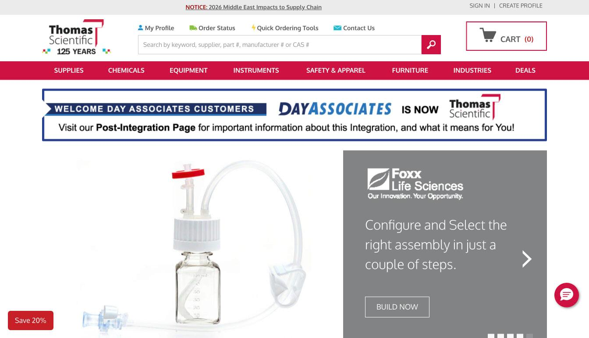
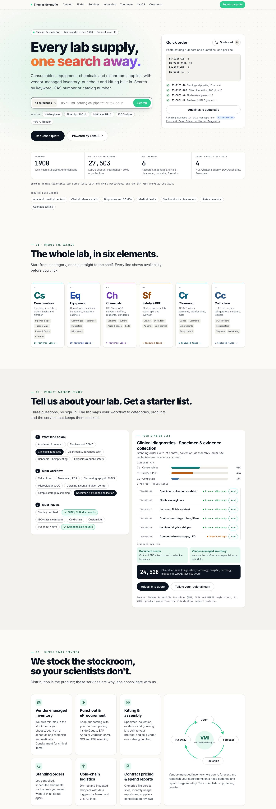
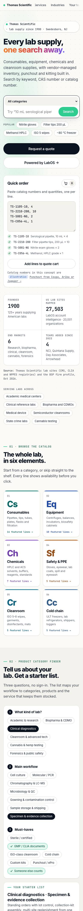

One standing-order program for collection kits across every draw site.
0kit stock-outs in 6 months
−38%POs per month
“Our draw sites stopped calling us about kits. That was the whole goal.” Lab operations director (composite)
Thomas Scientific · lab supply since 1900 · Swedesboro, NJ
Consumables, equipment, chemicals and cleanroom supplies, with vendor-managed inventory, punchout and kitting built in. Search by keyword, CAS number or catalog number.
Source: Thomas Scientific lab sites (CMS, CLIA and NPPES registries) and the BSP firm profile, Oct 2026.
Before and after
thomassci.com as captured on October 8, 2026, beside this concept. Scroll inside a frame to see the whole page.
Before The site today

After This concept


Source: Before screenshot of thomassci.com, October 8, 2026; Thomas Scientific growth plan and OS program evidence (Grainger and Avantor filings), October 2026.
01 · Browse the catalog
Start from a category, or skip straight to the shelf. Every line shows availability before you click.
02 · Product category finder
Three questions, no sign-in. The list maps your workflow to categories, products and the service that keeps them stocked.
03 · Supply-chain services
Distribution is the product; these services are why labs consolidate with us.
04 · Industries
Same catalog, different jobs to be done. Each industry gets its own lists, documents and service model.
years of keeping American laboratories supplied
05 · Our history
Source: BSP firm profile and company releases, Oct 2026.
06 · Find your lab team
Shading shows US lab sites mapped by LabOS account intelligence, in aggregate. Pick a state on the map or in the list.
Source: Thomas Scientific lab sites (27,503 sites from CMS, CLIA and NPPES registries), aggregated by state, Oct 2026. No customer names are shown.
07 · Powered by LabOS
LabOS connects search, punchout, vendor-managed inventory and account health, so reorders happen in your procurement system.
08 · Results
Composite scenarios that show how the service model works. The figures are illustrative and are not client results.
“Our draw sites stopped calling us about kits. That was the whole goal.” Lab operations director (composite)
“Audits got easier because every lot and CoA sits on one statement.” QA manager (composite)
“PIs order from the system they already use, and finance sees every dollar.” Core facility manager (composite)
Source: composite scenarios built for this concept; figures are illustrative.
Why it is built this way
The principles behind the site and the KPI each should move.
Lab distributors grew a median 1.5% last year, so the site is built to cut cost-to-serve and win share of wallet.
Source: design review of lab and industrial supply sites (Oct 2026); OS program evidence and public comparables (SEC filings).
09 · Questions
Still stuck? Press Ask to search the catalog and these answers.
10 · Request a quote
Paste a bill of materials or add lines from the catalog. A regional specialist replies with pricing and availability.
LabOS is the operating layer that makes this site work; the plan sequences it with cash, coverage and add-ons through the 2027 refinancing.